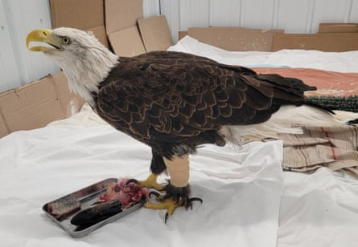
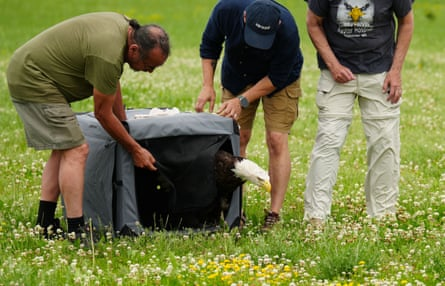

A veterinarian saved the life of a badly injured American bald eagle using a pioneering fish skin graft procedure more commonly used for human wound, releasing the bird back into the wild in a symbolic act ahead of the Fourth of July holiday.
The adult raptor named Kere was found by a park visitor in Hayward, Wisconsin , in August, with one of its legs ripped open from knee to ankle from an unknown injury, and appearing severely underweight.
With a deep infection already set in, and no healthy skin to work with, Dr Kimberly Ammann, founder and chief vet of the Winged Freedom Raptor Hospital in Spooner, said she initially figured euthanasia was the only option.
But the bird’s claws were still functioning, and Ammann remembered learning about the potential of skin graft procedures from her veterinary training.
Kere, an adult bald eagle, undergoing treatment at the Winged Freedom Raptor Hospital.Photograph: Winged Freedom Raptor Hospital
“I thought if I could get it to heal she could survive, because her toes worked, her foot worked,” she said.
A Google search led her to Kerecis, an Iceland-based company that has advanced the use of Atlantic cod skin for grafts on humans with advanced or challenging wounds, but which had never previously been asked to help with a bird of prey.
Kerecis sent over sterilised, dehydrated and descaled fish skin patches, and with the assistance of technical advice from the company, Ammann set to work repairing the eagle’s leg.
She said the patch took well, and with follow-up procedures to add fragmented fish skin to fill gaps and promote tissue regeneration, Kere – who was named by Amman and her staff to honor the company’s support – improved quickly through a 10-month rehabilitation period.
“The only reason this worked is because she was such a good patient,” said Ammann, who treated 75 injured or sick bald eagles at her hospital last year.
“She insisted on watching everything I did. I could not put a hood or a towel over her. Her wings were restrained but she never resisted and was so tolerant of all the time it took. She was stuck in an indoor room to keep it clean, no water, no bath and we had to keep a bandage on the whole time. She was amazing.”
Volunteers from Wisconsin’s Winged Freedom Raptor Hospital free bald eagle Kere after she recovered from fish skin graft surgery.Photograph: Winged Freedom Raptor Hospital
Ammann said it was an emotional day when Kere was finally released on 22 June, but that she cried more during the final examination when she determined the eagle’s wound was sufficiently healed.
“I laid her down to get a last picture, and I realized I was never going to touch this bird again, I would never have my hands on her again, and that got me,” she said.
“Even though I’m their doctor, and you keep all that objectivity and everything, I do get emotionally attached to these birds, every single one of them, and this one was very special.”
Kere’s release, watched by about a hundred people, including hospital staff, volunteers and workers from the Wisconsin department of natural resources, came amid preparations for the independence day holiday, which to Ammann was fitting given the bald eagle’s significance as a symbol of American liberty.
“I’m so excited for her,” she said.
“She can choose where she wants to go, what lake she wants to sit on, where she’s going to fish. She has all the freedom to make those choices now, and what better time to be able to do that than the Fourth of July?”